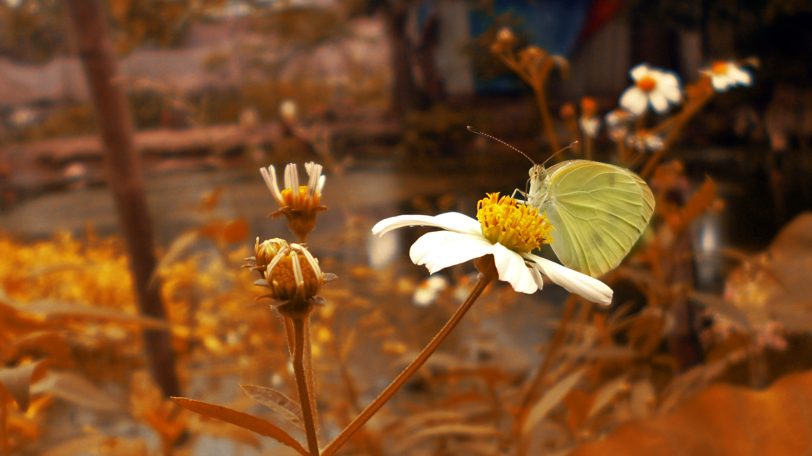

Nghia Ca Ngao
Let's create the future
Về tôi
Name: Do Tuan Nghia
Age: 17
Study at: Ben Tre high school
Address: Thanh Van, Thanh Lam, Me Linh, Ha Noi
Favorite: Sport, Programing, Singing
Câu chuyện
Tôi sinh ra ở một làng quê.
Tên của tôi là Nghĩa, tôi sinh ra ở một vùng quê ngoại thành Hà Nội, cách trung tâm thành phố hơn 30 km.
Cuộc sống xung quanh tôi khi còn bé là cánh đồng, là con trâu với cái cày, là kênh nước xanh xanh thẳng tắp kéo dài không biết từ đâu và đến đâu. Màu xanh mỡ của lúa, màu xanh tươi của bầu trời mãi cao, màu nâu của con đường đất tới trường có lẽ đã là rất nhiều rồi.
Tôi thích nơi tôi sinh ra, nơi bình yên đến lạ, nơi bóng cây rợp trời, nơi nới khói trắng tỏa nghi ngút, nơi có ánh bình minh trong trẻo mà vàng ươm, nơi mà thành phố nào nhiệt khó có nơi nào như thế.
Nickname Nghĩa Cá Ngảo
Cái tên Nghĩa Cá Ngảo đôi khi nghe qua thật buồn cười, một số không hiểu cái tên đó, một số nghe là lạ. Nhưng đôi với tôi, tôi thích cái tên ấy, nó mang một điều gì đó giữa tôi và anh trai.
Năm lớp 6, tôi bắt đầu dùng facebook, anh đã đặt cái tên ấy chô tôi: NCN
Cá ngão là một loài cá có cái miệng lớn, Người ta vẫn hay nói: mỒm rộng như cá ngão :))
Thực sự thì miệng tôi cũng không rộng lắm đâu, nhưng tôi ăn khá nhiều, và anh thường lôi cái cớ đó ra để nói tôi ăn tham. Và ví tôi như miệng cá ngão. Thật hài hước. Nhưng tôi vẫn thích điều này bởi từ ấy tôi có một cái tên khá hay đặt fb

Sở thích
Sở thích thì tôi có nhiều lắm, kể ra cũng khó mà hết. Nhưng gói gọn thì tôi thích Lập trình, chụp ảnh,
Lập trình là đam mê của tôi, tôi muốn tự tay tạo những cái mới, cái hay ho, và căn bản tôi thích sáng tạo
Chụp ảnh là một sở thích của tôi, tôi thích ghi lại những khoảnh khắc đẹp đẽ của mình, mọi người và đặc biệt là thiên nhiên, dẫu vậy tôi lại không thích chụp ảnh mình cho lắm. 